Is the American League Harder?
by A. Kline
Posted on 04/05/2024
In my previous post, I noticed that in the last 20 seasons, 9 of the 10 hardest divisions to play in (by both average opponent winning percentage and schedule rank) were in the American League. In contrast, only 3 of the 10 easiest divisions were. I ran a quick-and-dirty statistical test to determine that the probability of the former occurring by chance was only about 1 percent. However, I knew that this warranted a much more in-depth analysis–which I needed to put in a post of its own.
There are two main questions I want to answer here. Firstly, is there enough evidence to suggest that over the last 20 seasons, the American League has been tougher to play in than the National League? And if so, why? To answer the first question, I decided to reexamine the two datasets from last time, focusing on the differences between the two leagues. I then created graphs to visualize the data and get a clear idea of any such difference between the two leagues, if it exists.
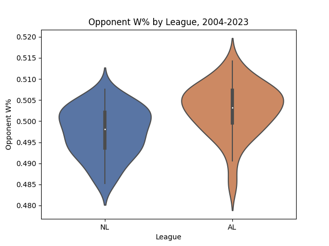From 2004 through 2023, divisions in the American League are on average slightly harder than their National League counterparts.
Even though I suspected there was an underlying difference in difficulty between the two leagues, I was surprised to see just how much it pops out on this graph. Of course, whether or not this difference is statistically significant is another question entirely–which we’ll get to later. But it gets even more interesting when you look at divisions within the two leagues.
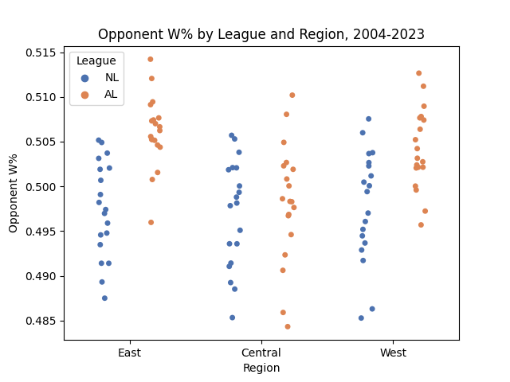Across all regions, the American League divisions seem to be consistently more difficult than their National League counterparts on average, as measured by opponent winning percentage. Note the dots here represent divisions (e.g. the 2022 NL Central), not individual teams.
As you can see above, this interleague difference in difficulty is apparent across all regions–though it ranges in magnitude from slight in the central to immense in the east and west. But that’s just average opponent winning percentage, which has plenty of imperfections when it comes to measuring schedule difficulty. So now let’s look at schedule rank, which is functionally the same as average opponent winning percentage, but looks at opponent Pythagorean winning percentage (a slightly more robust measure of team skill) instead.
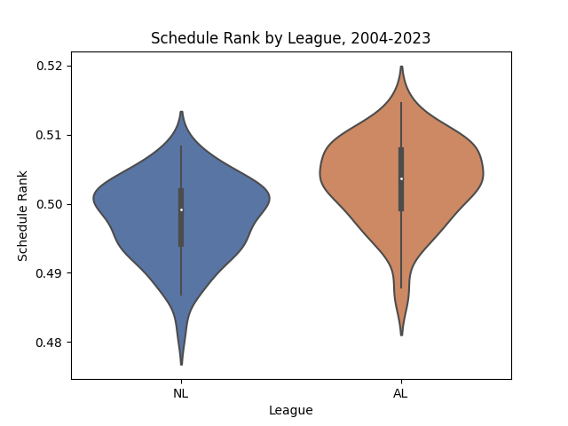As measured by schedule rank, the trend continues to stand–the AL has a higher average difficulty than the NL over the last 20 seasons.
Replacing the metric used to measure schedule difficulty does not change our findings. If anything, it makes the hypothesis that the American League is more difficult even more likely. Like before, let’s now look at the distribution across regions as well as leagues.
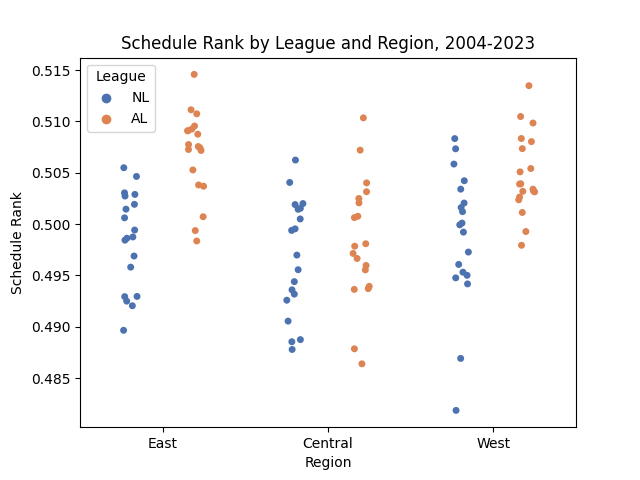Across all regions, the American League divisions seem to be consistently more difficult than their National League counterparts on average, as measured by schedule rank. Note the dots here represent divisions (e.g. the 2022 NL Central), not individual teams.
Again, replacing the metric used does not change our underlying findings here–American League divisions still seem to be harder across the board, especially in the east and west. So this trend is clearly apparent–but is it statistically meaningful? To find out, I decided to perform a two-tailed t-test on the AL and NL means for both opponent winning percentage and schedule rank, using the null hypothesis that the league means are equal for both metrics. There are the results:
| Metric | AL Mean | NL Mean | AL SD | NL SD | AL n | NL n | t | p |
| oppw% | .5028 | .4974 | .0061 | .0058 | 57 | 57 | 4.844 | <.0001 |
| sr | .5033 | .4980 | .0060 | .0058 | 57 | 57 | 4.795 | <.0001 |
The p-value of less than 0.0001 for both the opponent winning percentages and schedule rank t-test implies that if the true AL and NL means were in fact equal, then the odds of seeing sample means this different would be less than one in ten thousand. In other words, this is no coincidence–the American League was harder than the National League in this time period by a statistically significant margin.
But that leads directly into our second question. Why, exactly, would the American League have harder schedules? To answer this, I decided to look at a handful of team performance metrics across the two leagues–namely, winning percentage (both traditional and Pythagorean), runs scored per game, and runs allowed per game. Since American League teams play the vast majority of their games against other AL teams, then we should expect the AL to outplay the NL in at least one of these ways, leading to a harder schedule on average than the NL. First, let’s look at winning percentage in the two leagues.
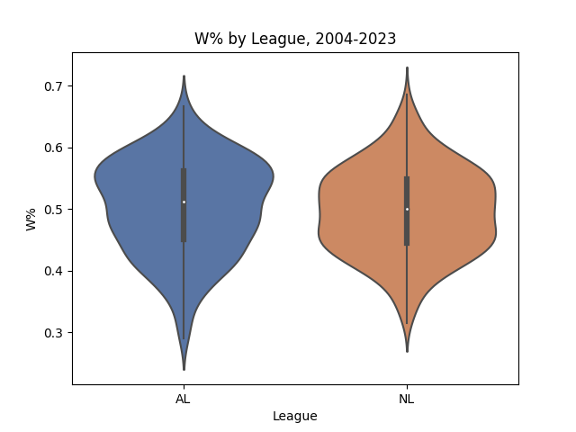When looking at all MLB teams from 2004 through 2023, there is no clear difference in average winning percentage between the American and National Leagues.
Even though the American League seems to have a slightly higher average win percentage than the NL, this pattern is not nearly as apparent as the graphs before. Furthermore, the difference in average seems to be offset by the fact that the AL has a larger cluster of ultra-low-performing teams (teams with winning percentages below around .300), while the NL has a larger cluster of ultra-high-performing teams (winning percentages above around .650). I was curious to see how the data looked upon being broken down by region, like before.
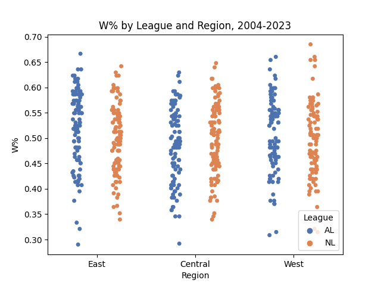Winning percentage has been relatively consistent by division, though the bulk of ultra-low outliers belonged to the AL. (Note that dots here represent individual team seasons–such as the 2014 Dodgers–not division seasons like before.)
Interestingly, American League teams do not seem to be any better at winning than their National League counterparts. So why, then, are their schedules significantly harder? Of course, winning percentage is only one way to measure team skill, and as I’ve said numerous times before, it has its flaws. So how does Pythagorean winning percentage vary between the two leagues?
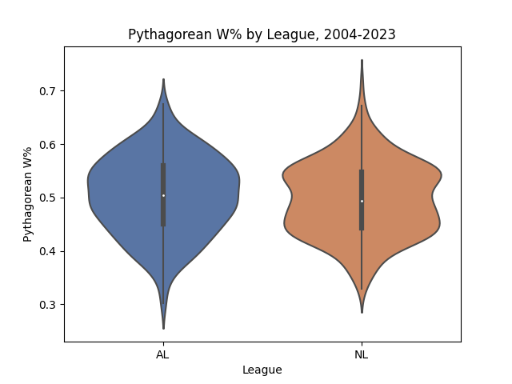Pythagorean winning percentage seems to follow the same pattern as regular winning percentage here.
Like before, there seems to be no apparent difference in performance between the teams of either league. This is further substantiated by taking a look at the breakdown by region:
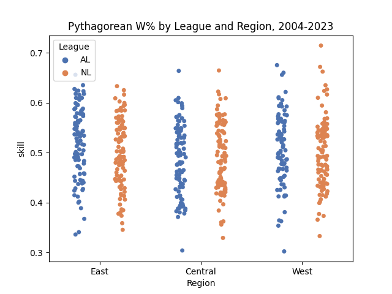On average, team performance does not vary significantly by region, as measured by Pythagorean winning percentage.
Of course, Pythagorean winning percentage is determined by two factors: runs scored and runs allowed per team. So what if we looked at each of these factors individually, to see if the AL has an edge that could explain the difference in opponent difficulty?
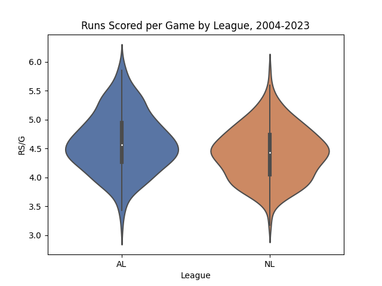The bulk of teams that scored over 5 runs per game in this timeframe were in the American League.
As you can see above, there is an apparent (if slight) difference in run scoring distribution between the two leagues, with the AL taking the advantage. This, I argue, makes sense–keep in mind only the American League had the designated hitter prior to just a couple years ago. Like before, let’s break this graph up by region, and see how all six divisions look like in terms of scoring.
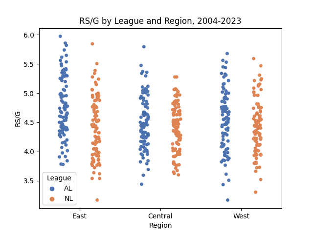When broken down by region, American League teams can be seen to make up the bulk of high-scoring teams across all divisions.
However, if the DH hypothesis is the true reason why AL teams score more, we should likewise expect them to allow more runs as well–which may go against our hypothesis that teams in the AL played better, because scoring more runs doesn’t mean as much when you allow more runs as well.
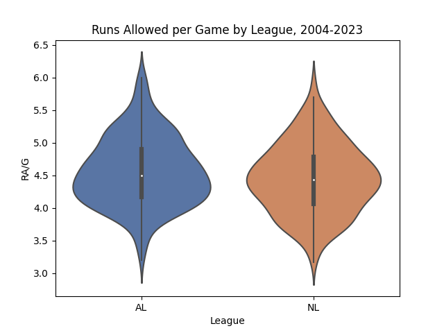There does appear to be a slight difference in runs allowed on average, with AL teams allowing more per game on average.
Just as the designated hitter hypothesis implies, we can see American League teams allow more runs per game–however slight the difference–just as they score more. When breaking this graph down by region, we get the following:
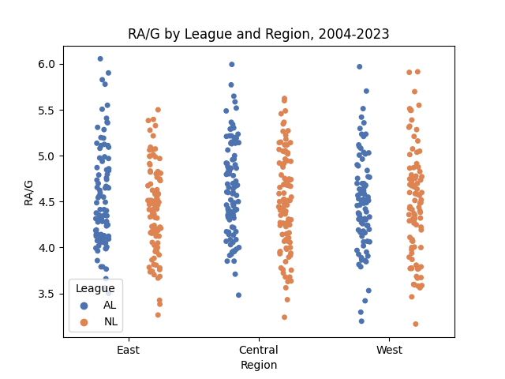American League teams make up the bulk of ball clubs that allowed more than 5.5 runs per game over the course of a season.
To be clear, none of the trends in these graphs are super apparent. But that’s not to say they can’t be statistically significant. So once again, I decided to perform a two-sided t-test on each of the performance metrics. Here are the results:
| Metric | AL Mean | NL Mean | AL SD | NL SD | AL n | NL n | t | p |
| W% | .5034 | .4968 | .0768 | .0706 | 276 | 294 | 1.069 | .2855 |
| pythW% | .5041 | .4968 | .0724 | .0685 | 276 | 294 | 1.237 | .2166 |
| RS/G | 4.601 | 4.417 | 0.508 | 0.454 | 276 | 294 | 4.565 | <.0001 |
| RA/G | 4.563 | 4.453 | 0.528 | 0.533 | 276 | 294 | 2.474 | .0137 |
Looking at the p-values, and using a significance threshold of 0.05, we can see that American League teams scored runs at a significantly higher rate from 2004 to 2023, and also allowed them at a slightly less apparent, yet still-significant rate over the same time period. As a result, American League teams did not perform significantly better than National League teams–despite the slight difference in mean winning percentage and mean Pythagorean winning percentage between the two leagues.
So, what should we make of this? Well, we can conclude with a good level of confidence that the American League was a more offense-heavy environment than the National League over the past 20 years, but we cannot conclude with confidence that this is why the AL had a harder schedule–at least with this data. One potential source of error on my end was that when looking at the differences between AL and NL team performance, I look at team data, not division data like I did before. I did this simply because I already had that data on hand, and did not want to go back and regenerate a version of the division dataset that includes performance data such as average winning percentage. Therefore, it is possible that by not aggregating team performance into divisional averages, there are trends or correlations that I might be missing. I wouldn’t necessarily count on this possibility being the case, though.
But if it was, in fact, the DH rule (and the discrepancy in offensive performance by league resulting from it) that caused AL teams to have harder schedules, then we should expect this trend to evaporate over time since both leagues have a DH now. However, given how recent this change was, the amount of data to work with is too small to instill enough confidence in any conclusion. Therefore, only time will tell if this trend continues. But one thing’s for sure: for much of the 21st century, for whatever reason, American League teams have had it harder.
*Note: All data here is sourced from Fangraphs and Baseball Reference unless otherwise stated.
**I decided to exclude the 2020 season from this analysis.